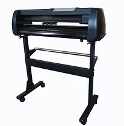
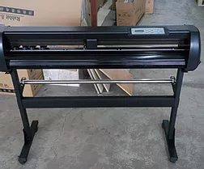
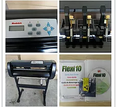
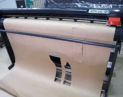
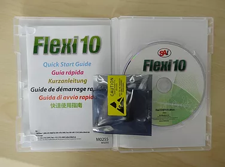

- 
Rabbit HX 800K
под заказ - 
Rabbit HX 1120K
Flexi Starter: под заказ
Corel Draw: 40 500 р. - 
Rabbit HX 1360K
Flexi Starter: 44 500 р.
Corel Draw: 42 500 р. - 
Rabbit HX 1780K
Flexi Starter: 54 500 р.
Corel Draw: под заказ
Режущий плоттер с оптическим датчиком - резка по меткам
Резка по меткам - это дополнительная опция режущего плоттера серии Rabbit K. Суть ее заключается в том, что плоттер может вырезать напечатанное изображение. Чтобы он распознал изображение, в него встроен оптический датчик. Например, нужно сделать магниты на холодильник. Для этого, например на магнитном виниле печатается картинка. По углам картинки ставятся метки. Винил вставляется в плоттер. Плоттер с помощью оптического датчика распознает метки и уже относительно этих меток вырезает картинку. Суть режущего плоттера по меткам заключается в следующем: если напечатать на самоклеющейся пленке полноцвет, потом можно по заранее выполненному контуру и меткам вырезать картинку по заданному контуру. Для этого надо растровую картинку открыть в векторном редакторе, например в CorelDraw, сделать контурную обводку по будущей линии резки и выставить метки по габаритам картинки. Это все скопировать, а потом на одной копии удалить растровую картинку, а на второй - контур резки. В печать запускается картинка. Потом она вставляется в режущий плоттер, он "ловит" габаритные метки и вырезает по контуру.
Что такое контурная резка?
Чтоб было понятно контурная резка - это резка по контуру отпечатанной области.
Например у Вас есть распечатанное изображение: например Буква. Она распечатана разными цветами, с Затемнением и т. д. Но задача состоит в том, что ее надо вырезать, причем аккуратно. Можно постараться вырезать ножницами, острием ножа или другим острым предметом, Но все равно Вы не получите аккуратного среза, делая это в ручную.
Вот для таких целей и существует контурная резка.
Смысл таков: Вы распечатываете изображение с метками координат листа. Меткой может служить любой объект. Будь то крестик либо точка. Потом Имея на руках дизайн распечатываемого изображения создается контур резки.
Метки совмещаются и Режущий плоттер начинает резать изображение по контуру, который был изготовлен на макете.
Таким способом можно аккуратно вырезать лейблы, полноцветные изображения, которые раньше не удавалось вырезать, полноцветные узоры и так далее. Вариантов можно назвать великое множество.
Самый известный вариант контурной резки - детская самоклейка с изображениями, где можно снять определенный участок на котором распечатано полноцветное изображение.
